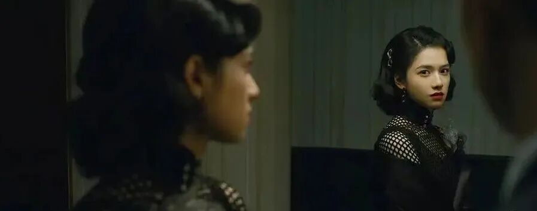
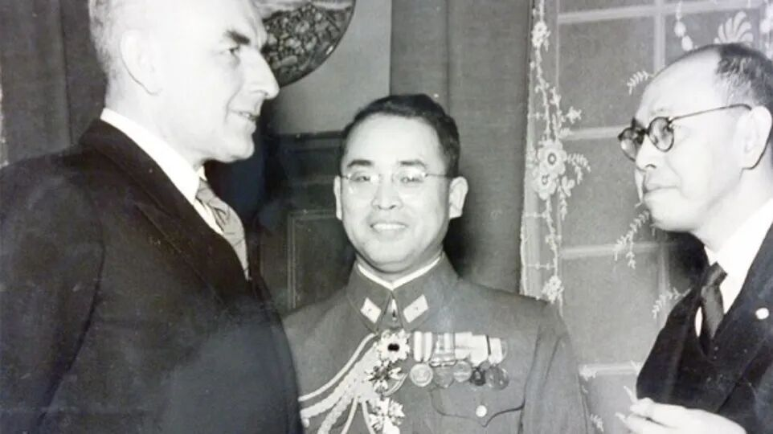
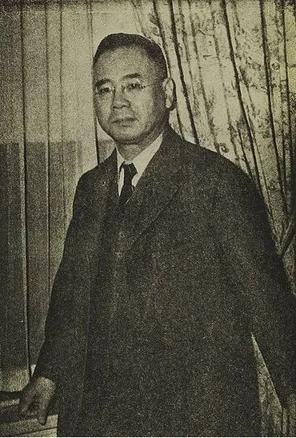
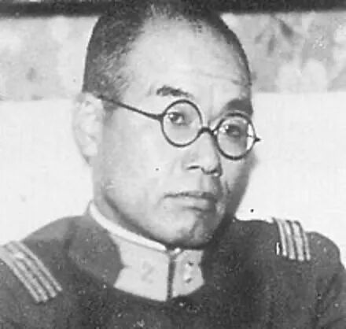
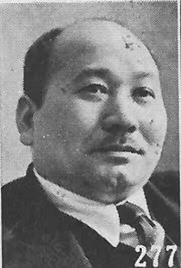
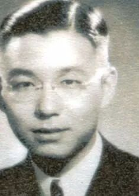
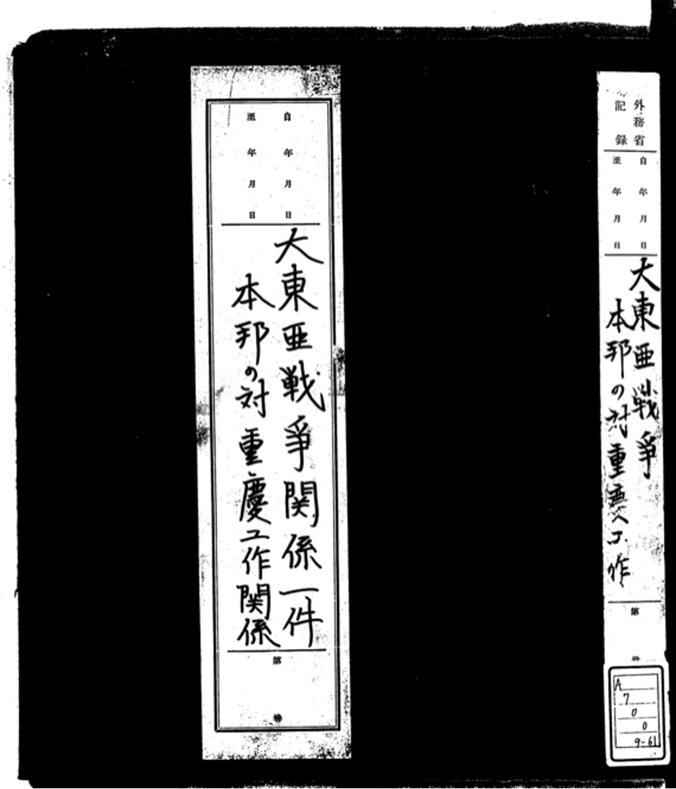
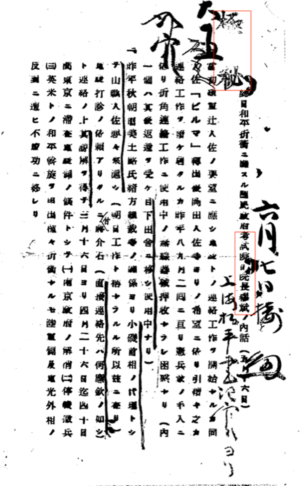
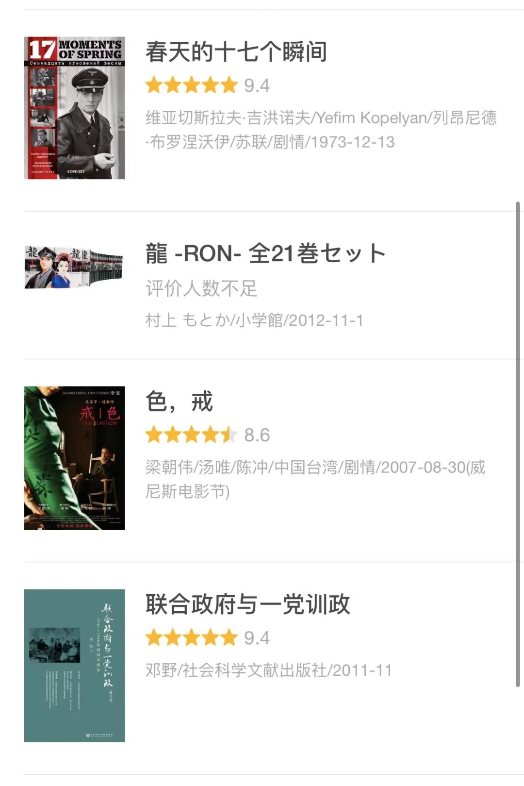
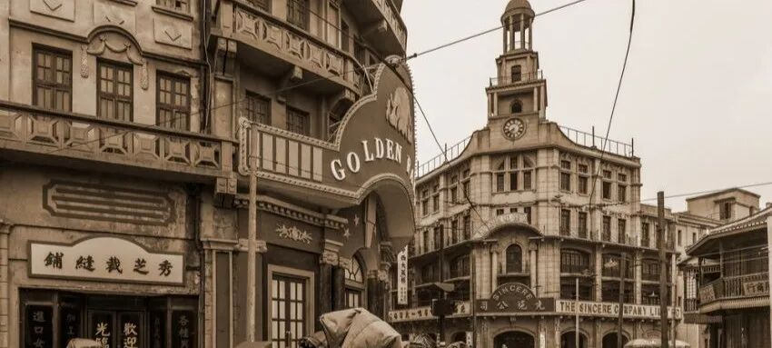

忽左忽右225｜谍海轶闻：抗战末期的「和谈」情报战


本期介绍 电影《无名》讲述了中共特科在上海周旋于重庆、汪伪、日本间谍机构之间的复杂故事，带观众重温了抗战历史叙事中被忽视的一页。在全世界开启反法西斯进程的局面下，重庆、南京与上海三座城市里的各路人马都在1944年前后主动或间接寻求对话，而这些信号和暗语影响了中国乃至东亚的未来与现在。为什么蒋介石和日军都有强大的和谈需求？日本方面到底做了哪些“工作”？卷入这场对话里的历史人物，到底是工具人还是穿花蝴蝶呢？请听本期节目沙青青的精彩分享。 背景资料补充
姜豪
1908年生于当时的宝山县罗店镇，大学期间就加入了国民党内“反蒋”的“改组派”，后曾任国民党上海市党部监察委员，同时也加入了洪门与青帮。1938年～39年间，在重庆方面的授意下与日本陆军方面的“小野寺机关”围绕所谓“和谈问题”有过接触，此事亦被称为“姜豪工作”或“姜豪路线”。晚年著有《“和谈密使”回想录》。

小野寺信 小野寺信，日本陆军内部的“俄国专家”。1938年被派往上海，背后势力为参谋本部第五课（对俄罗斯），认为鉴于对苏备战的需求，日本应尽快结束在中国的战争，因此希望建立与重庆的直接谈判管道，与姜豪有过多次接触。最终在日本军政各界的路线竞争中，输给了影佐祯昭领导的“梅机关”。战争末期被派往瑞典担任武官。

石射猪太郎
石射猪太郎，1937年日本开始全面侵华时，曾担任外务省东亚局长。此前，曾在“一二八事变”后担任过日本驻上海总领事。属于外务省内部的所谓“不扩大派”，曾参与过“陶德曼调停”，之后也代表日方与孔祥熙方面有过接触。1938年底，辞任东亚局长，后被外派巴西、缅甸任大使。日本战败后，从外务省辞职，著有回忆录《外交官的一生》《石射猪太郎日记》。

影佐祯昭与梅机关
1939年8月，为协助逃离重庆的汪精卫回南京成立伪政权，日本政府和军方在上海成立了所谓“梅机关”。负责人为原陆军参谋本部第七课（对华）的科长影佐祯昭。机关办公地点为上海虹口区北四川路的“梅花堂”。1940年3月，汪伪政府正式成立后，该机关亦解散，但其情报特务网络仍为日军所掌握。1942年后因得罪东条英机被调离中国战场。战后被中国政府认定为战犯被接受审判，1948年应肺结核死于狱中。

缪斌
缪斌，江苏无锡人，生于1899年。早年曾在黄埔军校担任教官并参加过东征。1931年至33年曾短暂赴日游历。抗战全面爆发后，先是跟随王克敏参与华北地区的伪政权“中华民国临时政府”。汪伪政府成立后，先后担任过立法院副院长、考试院副院长。据传在1943年夏曾于戴笠取得联系并开始为军统效力。1945年3月曾赴东京，与小矶国昭内阁讨论所谓“和谈事宜”，被日方称为“缪斌工作”。1946年4月被以“汉奸罪”处决。

孙曜东
孙曜东，安微寿县人，生于1912年，晚清帝师孙家鼐为其叔祖 。幼年至上海，后就读于圣约翰大学，留学美国，钻研金融。归国后，先后任法商洋行买办、重庆银行经理等职。 汪伪时期，先后任复兴银行行长、中国银行监察，担任过周佛海的机要秘书，在沪替周处理各类重要经济事宜。抗战胜利前后，与中共地下组织取得联系，参与过诸多秘密行动。1955年，由于潘杨案发，遭牵连入狱。1976年，获特赦自白茅岭返沪。晚年曾任徐汇区政协侨联高级顾问。2006年1月去世。

日本外务省所谓“对重庆工作”的历史档案，来源：亚细亚历史资料中心。

外务省档案中日方与缪斌的会谈记录，来源：亚细亚历史资料中心。
内容节选 预计阅读10分钟
为什么蒋介石1944年压力山大
沙青青
如果各位听众看过《无名》电影的话，应该知道它有一个很重要的背景，是当时重庆方面，也就是国民政府方面，跟日本人似乎在通过各种渠道在战争末期有一场利弊谈判。谈判的政治背景其实也很好理解，因为到了44年之后，整个日本在太平洋战场上兵败如山倒，它急于从中国泥潭中抽身把有限的资源汇聚到“本土决战”或者本土防卫去。
但是对于当时的中国来说，实际上其实也面临了经过七八年的抗战之后，国民政府处于资源稀缺、甚至濒临崩溃的状态，尤其是 1944 年这个时间点非常尴尬。整个反法西斯战场，所有国家都吹响了反攻的号角，从东欧一直到太平洋，无论是德国还是日本，都是处于非常被动的防守状态；而且凡事是对大事有所了解的人都有预期，觉得无论是德国也好、还是日本也好，战败只是时间问题。但是在这样历史的大势当中，中国战场成为了一个非常尴尬的例外，因为我们都知道，1944 年，日本人曾经发动过一次所谓的大陆作战“一号作战”要打通大陆交通线。
程衍樑
在中国战场上所谓的“豫湘桂会战”。
沙青青
对于当时的日本来说，它海上交通线实际上已经被美国人几乎切断了，海上补给线遭到了美国无论是航空兵还是潜艇的大量袭击，以至于它在东南亚的很多资源根本没有办法运回本土去，又无法支援战争。当时的日本人就提出了一个想法，我们要打通中国大陆的交通线。通过中国大陆的交通线来把东南亚或者是中南半岛的资源吸取出来，到日本的本土决战当中，所以当时就发动了这次作战，当时国民政府反而在这次宣传中表现得荒腔走板、丢盔弃甲、一泻千里。
程衍樑
比如发生在广西，桂军的抵抗也是非常拉胯。包括在其他像薛岳控制的地区，被当作二次大战末期东方战场非常耻辱性的一件事情，也经常被很多军事迷来讨论。
沙青青
所以在这个背景之下，虽然他知道日本人大势肯定是要败的，但是他眼前就遭遇了这样一次耻辱性的失败，所以对革命政府来说，肯定是遭遇空前的战争上的压力。
程衍樑
其实他在 43 年就已经预感到这件事情了，因为邓野老师的书《联合政府与一党训政》开头其实就从战争期间讨论了国民政府外交上面临的环境问题，他着重讲了 43 年德黑兰会议结果传出之后，因为德黑兰会议是一个中国没有参加的会议，英美苏的首脑在伊朗开了一个会，盟军决定要在欧洲开辟第二战场，等于是正式的三大巨头结盟。当时中国的政要都很开心，包括王世杰、宋子文情绪非常高涨，但是蒋介石自己意识到大祸临头。为什么呢？因为这样的协议出来，也就是达成了先欧后亚的决策，意味着盟军的资源、尤其是美国的资源，立刻会向欧洲倾斜。
太平洋战场日军的压力必然骤减，从这个角度上来说，日军从大本营出发，必然会集中全部力量在中国实施雷霆一击，所以当时蒋介石就做出了这样的一个判断，觉得自己要大祸临头了。而且很巧的邓野老师在里面其实罗列了当时在延安的毛主席，判断是一致的，觉得必然大祸临头。
所以44年全世界的反法西斯战争处在节节胜利的边缘，但是对于中国抗日战场，单独拆出来看，其实它处在一个非常危险的境地，尤其对偏安一隅的重庆政府来说。
沙青青
而且还有一个更现实政治上的考虑，抗战期间蒋介石政权跟美国方面的关系相对来说还是比较良好的，而且美国也提供了大量的军事援助，很多驼峰航线在印度训练军队。但是其实华盛顿方面实际上对蒋介石一直是颇有微词的，无论是对他的指挥的才能，还是国民政府内部的腐败，以及执政的效率都提出了很多的质疑，这些质疑其实在史迪威事件上体现得特别明显。
蒋介石也一直非常担心，可能在44年45年这个时间点，美国人会不会在中国找另外一个合作者？无论是国民党党内的元老，或者是非蒋嫡系的政治人物，或者甚至去延安找当时偏居在延安的中国共产党。我们也很清楚地知道有“美军考察团”，而且当时对延安方面的印象非常之好，就觉得风气很好，而且效率都特别高。
程衍樑
当时莫斯科驻扎在延安，就是代替斯大林来观察毛主席的弗拉基米洛夫就非常担心，他觉得苏联人马上就要被延安出卖了，他里面说了一段应该发生在44年或者45年，他在延安的一个礼堂外面看到一群战士在运画像，画像上画的有马克思、列宁、斯大、毛主席，还看到了乔治六世和罗斯福的画像被搬进去，他也觉得大事不妙。
沙青青
当时的以谢伟思为首的这批美国人近距离观察之后，他也得出了自己的一些结论，他认为当时的延安共产党的很多政策，他觉得所谓共产的气息并不是很浓烈，甚至会觉得只是名声上的共产党，他就会觉得毛主席的很多理念，跟我们美国人的政治理念很其实很接近；他觉得这一套其实比我在重庆碰到的老古董要开明。
程衍樑
蒋介石是民族主义者，是皇汉的政府。
沙青青
如果各位听众看过《无名》电影的话，应该知道它有一个很重要的背景，是当时重庆方面，也就是国民政府方面，跟日本人似乎在通过各种渠道在战争末期有一场利弊谈判。谈判的政治背景其实也很好理解，因为到了44年之后，整个日本在太平洋战场上兵败如山倒，它急于从中国泥潭中抽身把有限的资源汇聚到“本土决战”或者本土防卫去。
开口闭口就是四维八德，这套东西非常陈旧。蒋其实本人外语水平也有限，但在延安的时候美国人会发现很多他接触的中共高级领导人，居然非常努力地跟他说英语，让他有一种焕然一新的感觉。
程衍樑
而且这里也可以插一句， 44 年还发生了在国民党历史上很重要的华南分离运动。比如今天提到像薛岳著名的抗日将领，包括像李济深，国民党的非常重要的地方将领，在44年华南分离运动当中是发生过一系列的串联，甚至其实你可以认为从当时重庆的视角来看的话，这部分人已经快要脱离自己的掌控，而且他们跟美国人跟史迪威或者跟史迪威的继任者之间其实有非常说不清道不明的联络在。
本期嘉宾沙青青（微信公众号：13号埋立地）
本期提到 点击文末“阅读原文” 查看本期豆列 豫湘桂会战 / 王世杰 / 宋子文 / 谢伟思 / 彼得·帕尔菲奥诺维奇·弗拉基米罗夫 / 华南分离运动 / 薛岳 / 李济深 / 刘湘 / 韩复榘 / 东条英机 / 李士群 / 周佛海 / 陈公博 / 汪兆铭 / 村上纪香 / 陶德曼 / 石射猪太郎 《无名》/《联合政府与一党训政》/《色戒》/《龙-RON-》/《东亚往事》/《春天的十七个瞬间》/《密使：来自斯德哥尔摩》

👂🏻 文稿、排版：Garfield编辑：hualun封面：《无名》

[

忽左忽右110 | 谍海轶闻：魔都上海的情报往事](http://mp.weixin.qq.com/s?__biz=MzU3NTQ0MTM1OQ==&mid=2247492104&idx=1&sn=ae53e8f490da813536f7170c00c3fa20&chksm=fd21b2a8ca563bbeb3284014fe167cebc4ba2ca853bdffcf21835166935271fdabd589876227&scene=21#wechat_redirect)